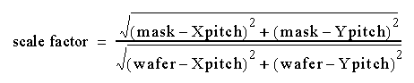

Alignment values are specified in the Alignment dialog box and applied when you click the Align and Correlate button in the window. The settings can be saved with Utilities > Alignment Info > Save Current Settings. For example, if you set Reflection to X and then save it, the reflection nodes change in the wi2mi-settings.xml file. Figure 1 shows the alignmentInfo node. The value of 1 for xReflection indicates that reflection must be applied. The value of 0 for yReflection indicates no flip.
Mask data is printed on the wafer with a step-and-repeat method. That is, the mask contains an image of the pattern that has to be printed multiple times on the wafer. This process makes use of a projection lens which reduces the mask image and transfers it onto the wafer. Hence, in Wi2Mi when the mask and wafer defects have to be compared, the wafer defects are scaled up, typically 4x. This is known as “scaling.”
Wi2Mi automatically calculates the scale factor and displays it in the Scale field in the Alignment dialog box. The scale factor calculation is

You can change the scale factor using the Scale field. Wafer defects are scaled up by this amount and displayed in the Defect Map window.
During photolithography the mask data may be flipped along the x-axis or y-axis before it is printed on the wafer. If you need to compare data from such a process then the mask data has to be flipped before analysis. This is known as “reflection”.
Flipped data is translated so that its bottom lower-left corner coincides with the previous bottom lower-left corner, as shown in Figure 2 and Figure 3. The data can be flipped along either the x or y axis, but not both at the same time. You specify reflection in the Alignment dialog box.
The direction of the mask and wafer data that you are inspecting may be different. In order to align the two in the same direction, the mask data may need to be rotated.
You specify the angle of rotation in the Alignment dialog box. Rotations are restricted to 90, 180, and 270 degrees, moving anti-clockwise. Wi2Mi shifts the mask data after rotation so that the lower left coordinates of the field cycle display remain the same.
In addition to the automatic translation of wafer stacking and aligning after rotation or reflection, you can specify an additional offset. This can be done in the Alignment dialog box by either entering a specific Offset value or selecting a mask defect and wafer defect. When you click Align or Align and Correlate, the Offset fields update.